Fotograf · Rottenburg an der Laaber · Landkreis Landshut
ADAM OLENDZKI
Echte Momente, ruhig eingefangen — Familien, Paare, Business und mehr.
SCROLL
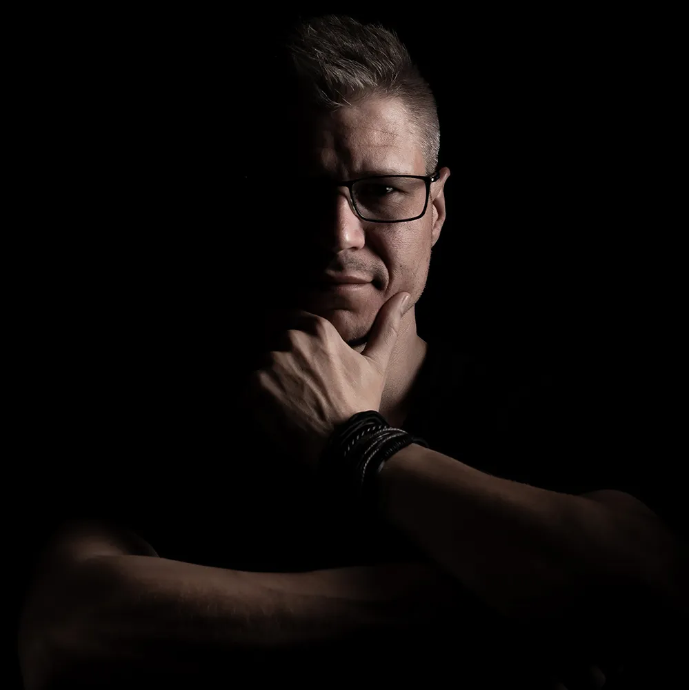
Ich glaube, dass jedes Licht seine eigene Geschichte erzählt. Genau danach suche ich – nach Atmosphäre, Emotionen und Momenten, die sich nicht wiederholen lassen. Jedes Shooting ist für mich eine neue Gelegenheit, etwas Einzigartiges entstehen zu lassen.
Ich lade dich ein, durch mein Portfolio zu stöbern und meine Welt der Fotografie zu entdecken. Wenn du Lust hast, wirf auch einen Blick in meinen – bisher noch kleinen – Blog. Dort teile ich von Zeit zu Zeit Gedanken, Inspirationen und Themen, die mich bewegen oder die ich für wert halte, weiterzugeben. Nicht alles wird sich um Fotografie drehen – manchmal geht es einfach um Dinge, die den Blick auf die Welt ein Stück verändern können.
Fotograf für Familie, Paare, Business und mehr in Rottenburg an der Laaber
Als Fotograf begleite ich Familien, Paare und Unternehmen bei Fotoshootings in Rottenburg an der Laaber und im gesamten Landkreis Landshut. Auch in Schierling, Abensberg, Kelheim, Straubing, Ingolstadt und Regensburg entstehen bei mir einfühlsame Portraits, Familienfotos, Business-Portraits und Schwangerschaftsfotografie mit Babybauch-Shootings — persönlich, ruhig und mit Blick fürs Wesentliche.
Ich liebe natürliche, zeitlose Fotografie mit einer klaren und minimalistischen Bildsprache. Besonders faszinieren mich echtes Licht, stimmungsvolle Schatten und kleine Details, die einem Bild Charakter verleihen.
Ich probiere gerne neue Ideen aus, experimentiere mit Licht und Perspektiven und verfolge aktuelle Trends in der Fotografie – ohne dabei meinen eigenen Stil aus den Augen zu verlieren.
Mir ist wichtig, dass Du Dich vor der Kamera wohlfühlst. So entstehen authentische Bilder, die nicht nur schön aussehen, sondern sich auch echt anfühlen. Ich freue mich darauf, Deine Geschichte in Bildern festzuhalten.
„Which of my photographs is my favorite? The one I'm going to take tomorrow.“Imogen Cunningham
Häufig gestellte Fragen
Wie läuft ein Shooting eigentlich ab? Hier findest Du die wichtigsten Fragen und Antworten.
Ich kann nicht posen / Ich bin nicht fotogen. Hilfst Du mir?
Auf jeden Fall! Das ist die größte Sorge fast aller Kunden, aber Du musst absolut kein Model sein. Ich werde Dich während des gesamten Shootings anleiten, Dir Tipps geben und dafür sorgen, dass Du Dich wohlfühlst. Die schönsten Bilder entstehen ohnehin, wenn Du Dich bewegst, lachst und einfach Du selbst bist.
Wie sollte ich mich auf das Shooting vorbereiten?
Komm am besten ausgeruht und entspannt. Achte darauf, vor dem Shooting genug zu trinken, damit Deine Haut frisch aussieht. Wenn Du ein Babybauch-Shooting machst, ziehe bitte ca. 2 Stunden vor dem Termin lockere Kleidung an, um unschöne Abdrücke von Socken oder engen Hosen auf der Haut zu vermeiden.
Was sollte ich zum Shooting anziehen?
Das Wichtigste: Du musst Dich darin wohlfühlen. Kleidung ohne große Logos oder wilde Muster eignet sich am besten, da diese zu sehr vom Gesicht ablenken. Bei Paar- oder Familienshootings sollten die Outfits stilistisch aufeinander abgestimmt sein.
Was sollte ich vor dem Shooting lieber NICHT tun?
Bitte gehe in den Tagen vor dem Shooting nicht mehr ins Solarium und vermeide Experimente mit neuen Kosmetikprodukten oder Selbstbräunern (Gefahr von Flecken oder allergischen Reaktionen). Trinke am Vorabend keinen Alkohol und verzichte kurz vor dem Shooting auf zu eng anliegende Kleidung.
Wer darf zum Shooting mitkommen?
Bei Familien-, Paar- oder Babybauch-Shootings sind Dein Partner, Deine Kinder oder auch Dein Haustier herzlich willkommen! Wenn Du ein Einzelporträt machst, bringe bitte nur dann eine Begleitperson mit, wenn sie Dir Sicherheit gibt und Dich nicht nervös macht.
Wann und wie kann ich meine Bilder nach dem Shooting sehen?
Innerhalb von 3–5 Tagen nach dem Shooting sende ich Dir einen Link zu einer passwortgeschützten Online-Galerie. Dort siehst Du die vorausgewählten, grundoptimierten Bilder als Vorschau und kannst in aller Ruhe Deine Favoriten auswählen.
Wie läuft die Bildauswahl genau ab?
Ganz entspannt von zu Hause aus! Du loggst Dich in Deine Online-Galerie ein und markierst Deine Lieblingsbilder mit einem Herz-Symbol. Sobald Du Deine Auswahl getroffen hast, gibst Du mir Bescheid, und ich beginne mit der professionellen High-End-Retusche.
Bekomme ich auch die unbearbeiteten Raw-Dateien?
Nein, ich gebe keine unbearbeiteten Fotos oder RAW-Dateien heraus. Die Bearbeitung und Retusche machen einen großen Teil meines künstlerischen Stils aus. Ein unfertiges Bild repräsentiert meine Arbeit nicht vollständig.
Wie lange dauert es, bis ich die fertigen Bilder bekomme?
Nach Deiner finalen Bildauswahl benötige ich maximal zwei Wochen für die detaillierte Retusche und Fertigstellung der Bilder. Qualität braucht etwas Zeit, und ich möchte, dass jedes Bild perfekt wird.
In welcher Form erhalte ich die Fotos?
Du erhältst die fertig retuschierten Bilder als hochauflösende JPG-Dateien per digitalem Download über Deine Online-Galerie. Die Bilder sind perfekt für den Druck optimiert.
Darf ich die Fotos auf Instagram, Facebook etc. posten?
Ja, sehr gerne! Du erhältst die privaten Nutzungsrechte für alle gekauften Bilder. Ich freue mich natürlich riesig, wenn Du mich bei Veröffentlichungen auf Social Media verlinkst oder nennst.
Veröffentlichst Du meine Bilder auf Deiner Website oder Social Media?
Nur mit Deiner ausdrücklichen Einwilligung! Ich respektiere Deine Privatsphäre absolut. Vor einer eventuellen Veröffentlichung frage ich Dich immer um Erlaubnis, und Du musst dafür eine schriftliche Einverständniserklärung unterschreiben. Wenn Du das nicht möchtest, bleiben die Bilder ganz privat.
Wo findet das Shooting statt?
Das hängt ganz von Deinen Wünschen und dem Stil des Shootings ab. Wir können im Studio arbeiten, eine coole Outdoor-Location nutzen (z. B. Natur, Park, urbane Kulissen) oder ein gemütliches Homestory-Shooting bei Dir zu Hause machen.
Was passiert, wenn es am Tag des Outdoor-Shootings regnet?
Bei schlechtem Wetter (starker Regen, Sturm) verschieben wir das Shooting auf einen Ersatztermin. Ein bewölkter Himmel ist übrigens kein Problem – das Licht ist dann sogar besonders weich und schmeichelhaft für Porträts!
Zu welcher Uhrzeit finden Outdoor-Shootings statt?
Die beste Zeit für Outdoor-Aufnahmen ist die sogenannte „Goldene Stunde" kurz nach Sonnenaufgang oder ca. 1–2 Stunden vor Sonnenuntergang, da das Licht dann magisch warm und weich ist. Generell sind Shootings aber den ganzen Tag über möglich, sofern die Location es zulässt und das Licht vor Ort vorteilhaft ist.
Was passiert, wenn ich oder mein Kind am Shooting-Tag krank werden?
Das kann immer passieren, besonders mit Kindern! Bitte gib mir so früh wie möglich Bescheid. In diesem Fall verschieben wir den Termin völlig unkompliziert auf den nächstmöglichen freien Tag. Gesundheit geht vor.
Kann ich vorab ein paar Tipps zur Vorbereitung bekommen?
Klar, gerne! Auf Wunsch schicke ich Dir vorab ein paar Tipps zur Vorbereitung.
Hier findest Du verschiedene kreative Projekte und künstlerische Experimente, mit denen ich mich neben der klassischen Fotografie beschäftige. Diese Arbeiten entstehen aus purer Leidenschaft – ob thematische Konzept-Shootings, persönliche Projekte oder visuelle Experimente mit Licht und Kulissen. Wenn Du beim Betrachten dieser Bilder eine Verbindung spürst und Potenzial für eine gemeinsame kreative Zusammenarbeit siehst, freue ich mich sehr über eine Nachricht.
Hochwertige Produktfotos sind der Schlüssel zu mehr Umsatz. Ich zeige Deine Produkte im besten Licht – ob für den Online-Shop, Kataloge oder Social Media.
Lass uns gemeinsam etwas Außergewöhnliches erschaffen. Ich übernehme gerne ausgefallene und individuelle Konzepte – ganz unabhängig davon, wie ungewöhnlich die Idee zunächst klingt.
Kreativer Austausch auf Augenhöhe in Regensburg, Landshut und Straubing. Ich suche Modelle für mein Portfolio in den Bereichen Porträt, Sinnlich, Fine-Art und Fashion.
Mein persönlicher Rückzugsort – die Natur in ihrer reinsten Form. Ein Moment der Ruhe, in dem ich versuche, Stimmung und Atmosphäre so festzuhalten, wie ich sie selbst empfinde.
Neben der Fotografie baue ich auch individuelle Websites für lokale Unternehmen – von Beauty-Studios bis Physiopraxen. Kein Baukasten, sondern ein Design, das zu Dir passt.
Neben klassischen Portraitshootings arbeite ich als Fotograf aus Rottenburg an der Laaber auch an kreativen Projekten wie Produktfotografie, Immobilienfotografie, TFP-Kooperationen und Landschaftsfotografie – für Kundinnen und Kunden aus Landshut, Regensburg, Ingolstadt, Kelheim, Abensberg, Mainburg, Straubing und München.
Hochwertige Produktfotos sind der Schlüssel zu mehr Umsatz. Ich zeige Deine Produkte im besten Licht – ob für den Online-Shop, Kataloge oder Social Media.
Der erste Eindruck entscheidet – das gilt online noch mehr als in der Realität. Käufer und Mieter verbringen oft nur wenige Sekunden mit einem Exposé, bevor sie entscheiden, ob ein Objekt überhaupt einen Besichtigungstermin wert ist. Genau in diesen Sekunden zählt jedes Detail des Bildes.
Ich kenne die Tricks, mit denen Räume größer, heller und einladender wirken: die richtige Perspektive, präzise Linienführung, durchdachtes Licht und ein Blick für die Details, die einen Raum lebendig machen.
Professionelle Immobilienfotos verkürzen die Vermarktungsdauer, erhöhen die Anzahl ernsthafter Anfragen und rechtfertigen oft sogar einen besseren Preis. Egal ob Wohnung, Haus, Gewerbeobjekt oder Ferienimmobilie – ich sorge dafür, dass jeder Raum sein volles Potenzial zeigt.
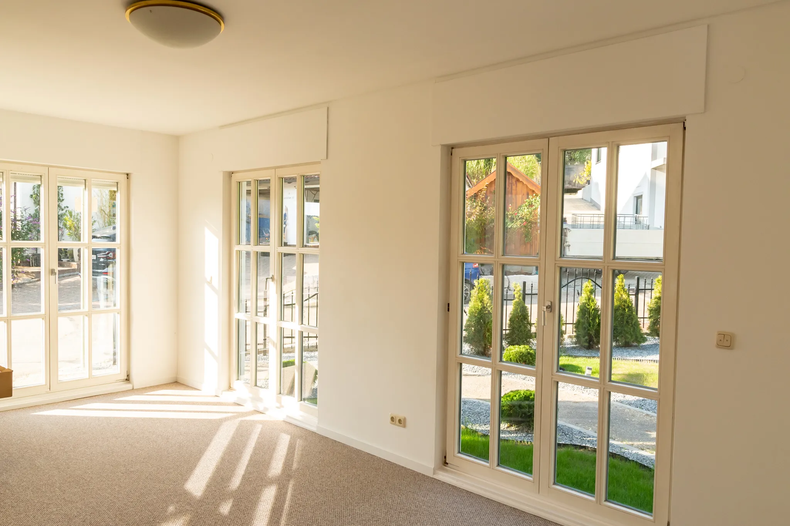
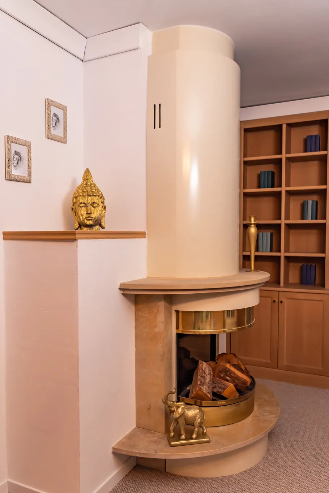
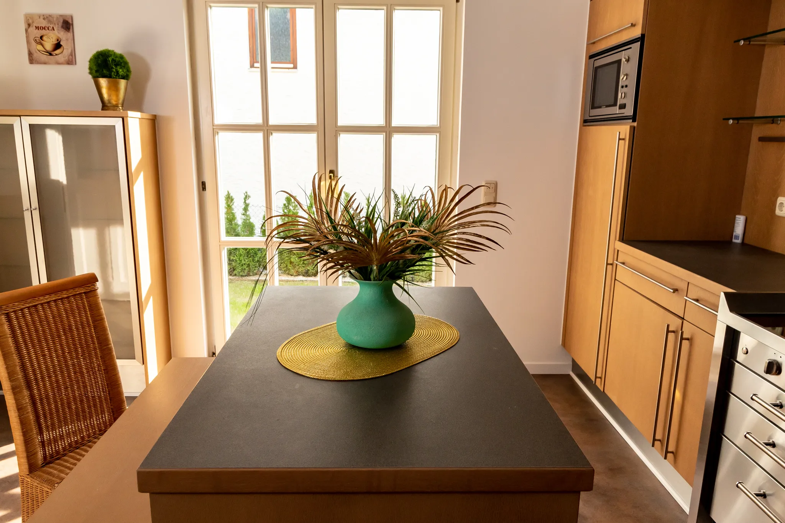
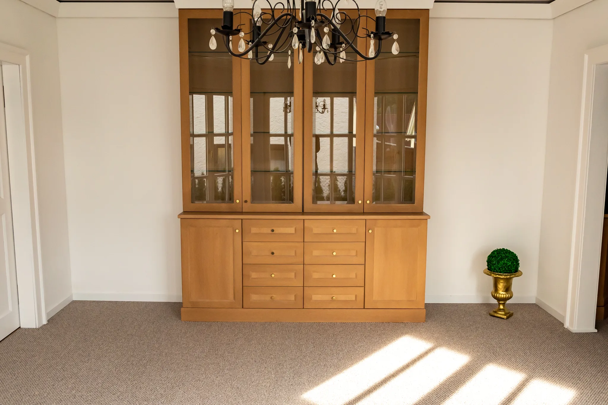
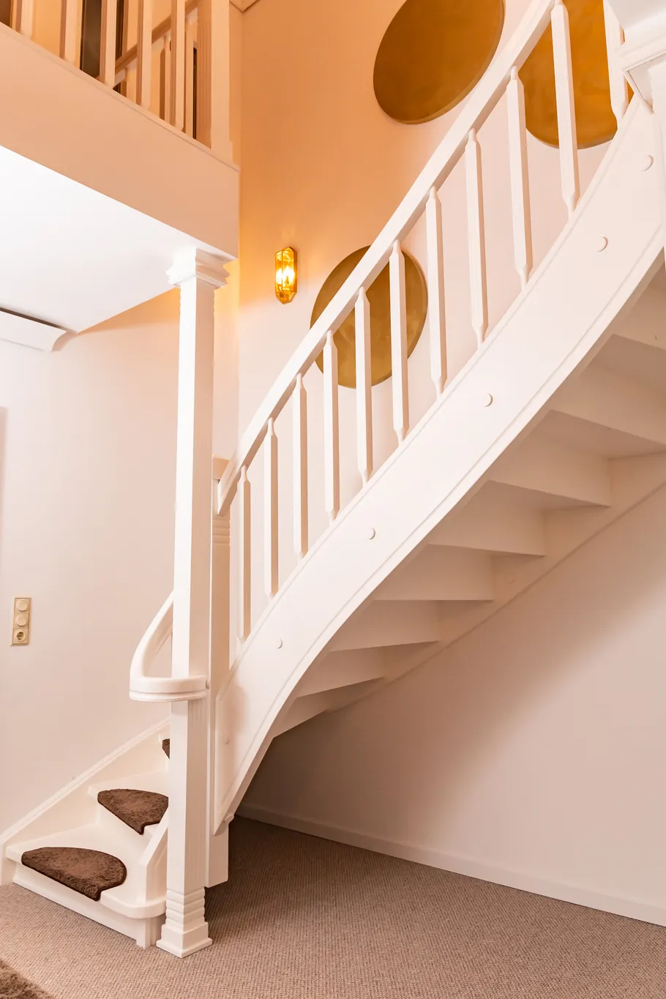
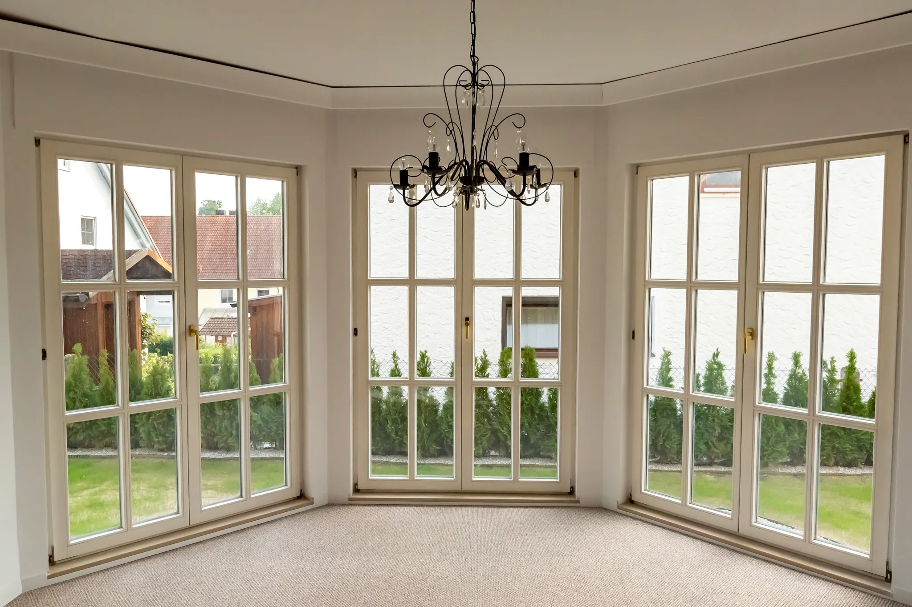
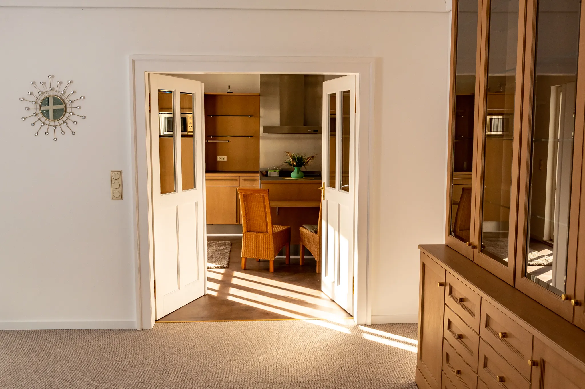
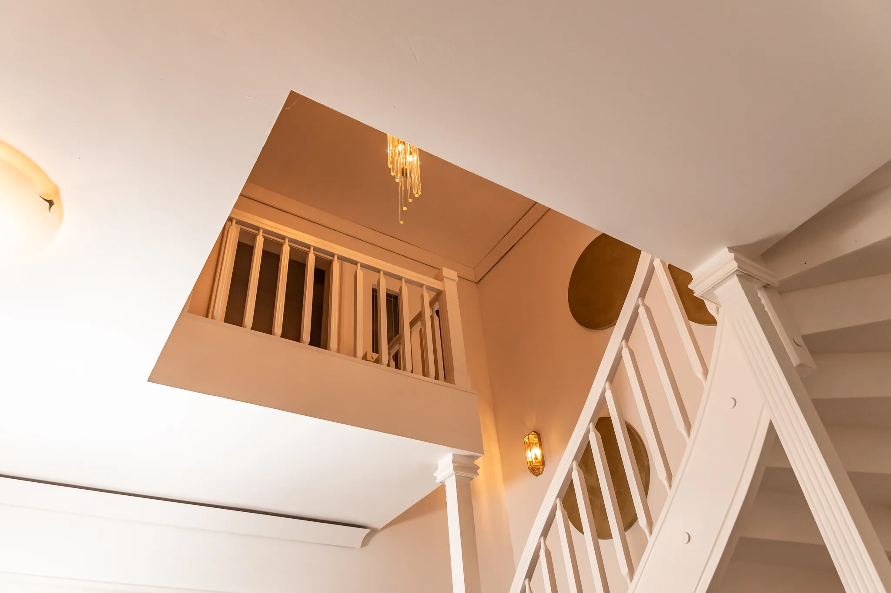
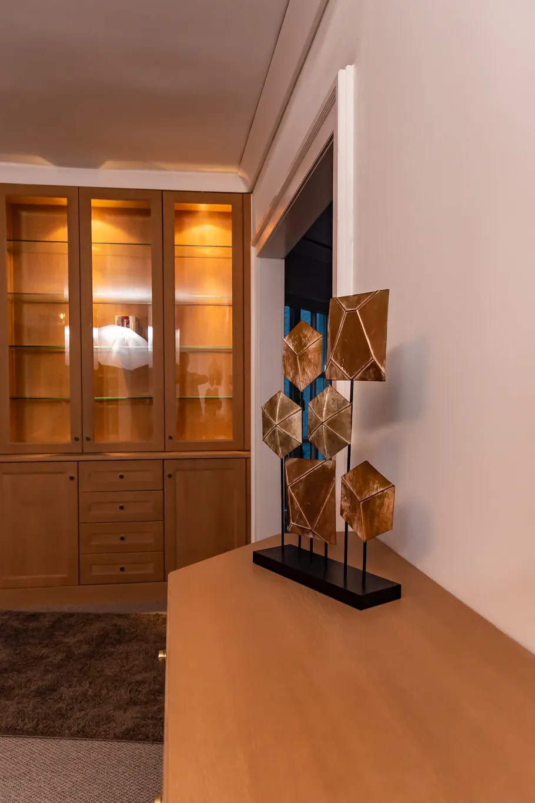
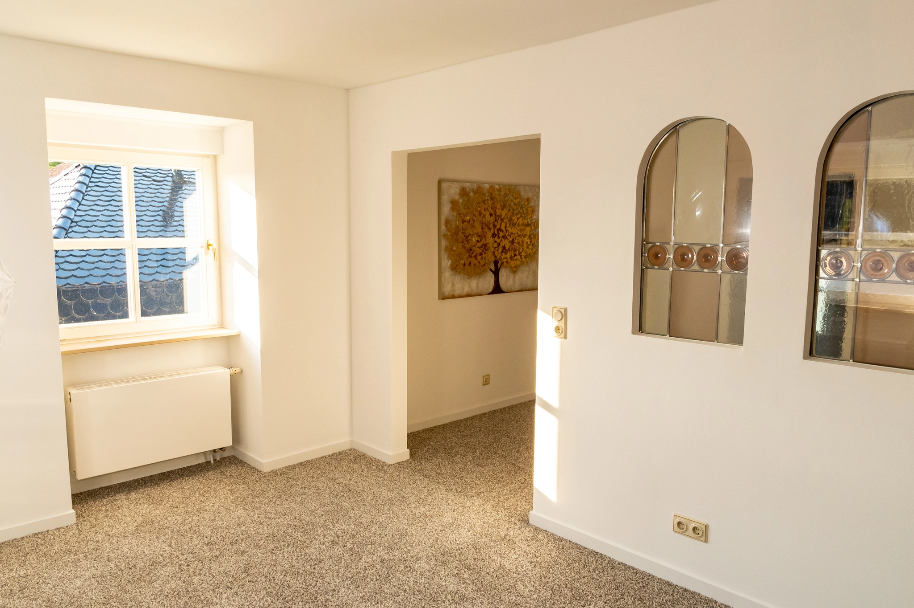
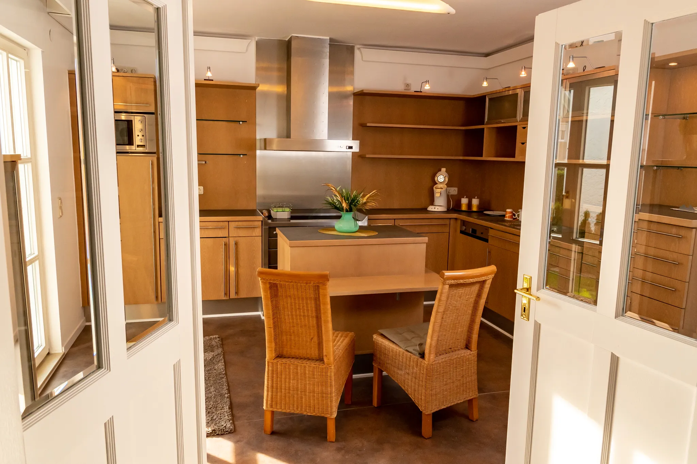
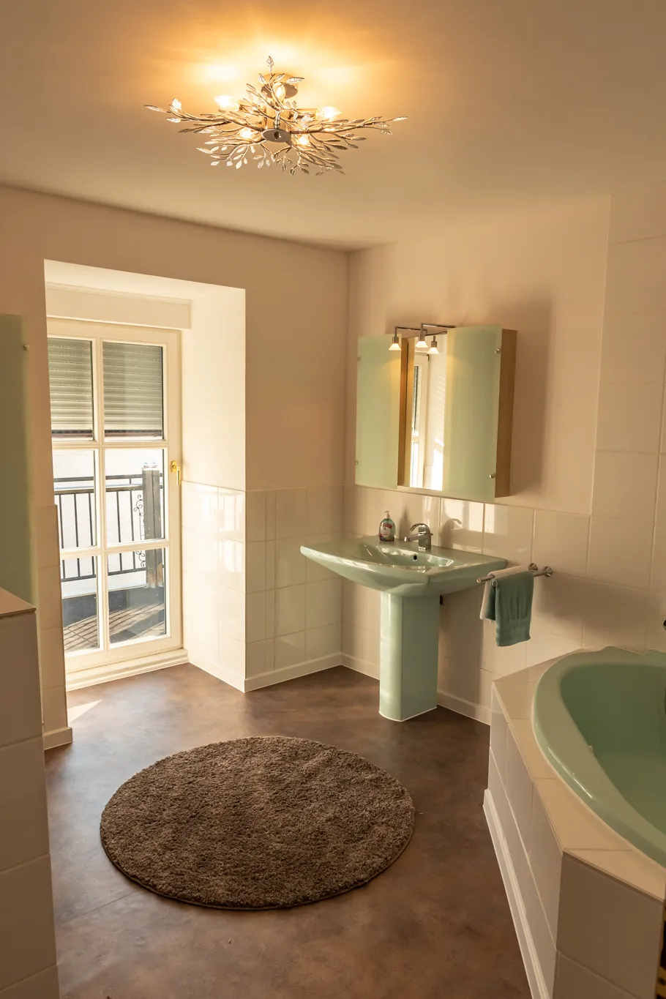
Deine Idee für ein Fotoshooting
Lass uns gemeinsam etwas Außergewöhnliches erschaffen
Du hast eine ganz bestimmte Vorstellung im Kopf, findest aber nirgends ein passendes Angebot dafür? Genau solche Projekte reizen mich am meisten. Ich übernehme gerne ausgefallene und individuelle Konzepte – ganz unabhängig davon, wie ungewöhnlich die Idee zunächst klingt.
Ob ein Shooting mit Deinem Auto oder Motorrad, eine inszenierte Szene in der Küche beim Kochen, ein Porträt mit Deinem Haustier, eine Aufnahme in Deiner Werkstatt oder Garage, ein Sport- oder Tanzshooting in Bewegung, ein nostalgisches Setting mit altem Equipment oder Fahrzeugen, ein Konzept rund um Dein Hobby oder Handwerk, oder ein storytelling-artiges Shooting, das eine kleine Geschichte erzählt – ich freue mich auf jede kreative Herausforderung.
Schreib mir einfach über das Kontaktformular, erzähl mir von Deiner Idee, und wir besprechen gemeinsam, wie wir sie am besten umsetzen können.
TFP
Kreativer Austausch auf Augenhöhe in Regensburg, Landshut und Straubing
Hey! 📸 Wenn Du, wie ich, es genießt, Dein Portfolio hin und wieder mit einem weiteren Fotoshooting zu erweitern, oder wenn Du mit dem Modeln anfangen möchtest, weil Du denkst, dass Du dafür perfekt geeignet bist, dann bist Du hier genau richtig! Ich suche Modelle für mein Portfolio in den Bereichen Porträt-, Sinnlich-, Fine-Art- und Fashion-Fotografie in verschiedenen Kombinationen.
Es ist nicht nötig, dass Du bereits Dutzende von Shootings hinter Dir hast – was für mich am wichtigsten ist, ist Deine Begeisterung und Deine Natürlichkeit vor der Kamera. Ich habe viele Ideen, die ich gerne mit Dir umsetzen möchte :)
Was erwarte ich? Eine positive Einstellung 😊 · Offenheit für verschiedene Ideen während des Shootings · Natürlichkeit beim Posen (aber ohne Stress, alles entspannt!) · Bereitschaft zur Zusammenarbeit und Engagement
Wenn Dir mein Stil gefällt, Du neue Erfahrungen sammeln möchtest, ein paar schöne Fotos bekommen und dabei noch viel Spaß haben möchtest – schreib mir! Gemeinsam schaffen wir etwas Unglaubliches. Bis bald beim Shooting!
Landschaftsfotografie
Mein persönlicher Rückzugsort – die Natur in ihrer reinsten Form
In meinen freien Momenten greife ich immer wieder zur Kamera, um die Schönheit der Landschaft einzufangen – die ersten Sonnenstrahlen über den Feldern Niederbayerns, Nebel über stillen Wäldern oder das warme Licht eines Sommerabends.
Die Landschaftsfotografie war über viele Jahre ein sehr wichtiger Teil meines Lebens und meiner fotografischen Entwicklung – sie hat mir damals enorm viel Motivation gegeben, mich stundenlang mit Licht, Geduld und Komposition zu beschäftigen, lange bevor ich mich der Porträtfotografie zugewandt habe.
Bis heute ist sie für mich ein Ausgleich zum Alltag: ein Moment der Ruhe, in dem ich die Natur ganz bewusst wahrnehme und versuche, ihre Stimmung und Atmosphäre so festzuhalten, wie ich sie selbst empfinde.
Neben der Fotografie entwerfe und baue ich Websites – hauptsächlich für kleine, lokale Unternehmen aus Bayern. Kein Baukasten, kein Copy-Paste-Template: Jedes Projekt bekommt ein eigenes Design, abgestimmt auf die Branche und die Zielgruppe.
Da ich gleichzeitig Fotograf bin, bringe ich dabei ein Auge für Bildsprache mit – bei Bedarf entstehen die Fotos für Deine Website direkt bei mir im Shooting, nicht aus der Stockdatenbank.
Unter aole.web zeige ich verschiedene Konzepte für Beauty-Studios, Physiopraxen, Nagelstudios und mehr – als Einblick in meinen Design-Stil und meine Arbeitsweise.
Wenn Du Fragen jeglicher Art hast – manchmal ist ein individueller Ansatz genau die richtige Lösung. Ich freue mich darauf, Deine Erwartungen, Wünsche und kreativen Ideen kennenzulernen. Ich bin absolut offen für neue Herausforderungen und gemeinsame kreative Erfahrungen!
Möchtest Du wissen, wie Du Dich optimal auf ein Shooting vorbereitest und welche Fehler Du unbedingt vermeiden solltest? Wähle einfach das entsprechende Thema unten im Formular aus, und Du erhältst einen vollständigen Leitfaden direkt in Dein E-Mail-Postfach.
Möchtest Du einen Blick hinter die Kulissen werfen, aktuelle Projekte sehen oder Dich einfach vernetzen? Ich würde mich riesig freuen, wenn Du mich auf meinen Social-Media-Kanälen begleitest. Lass uns in Kontakt bleiben! Klick hier für alle Plattformen: follow my creative journey. Ich freue mich auf Deinen Besuch und jeden neuen Eindruck!
Diese Website verwendet Cookies, um Dir die bestmögliche Nutzererfahrung zu bieten. Mit der weiteren Nutzung der Seite stimmst Du der Verwendung von Cookies zu.